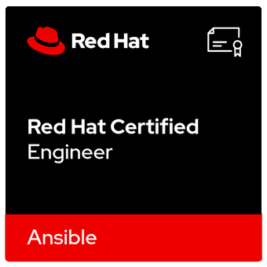

whoami
I'm a Senior Linux System Administrator from the Czech Republic with 8+ years of keeping enterprise Linux fast, secure, and boring — in the best possible way. My home turf is the Red Hat ecosystem: RHEL at scale, end-to-end Ansible automation, and OpenShift container platforms.
If it can be automated, I automate it. If it can break, I monitor it. Open source isn't a preference — it's my default engineering approach, proven daily both at work and in an always-on, production-grade homelab.
certifications



skills
Systems
Production systems that stay up — stable, patched, and predictable.
- RHEL / Debian
- Proxmox VE / KVM & LXC
- OpenShift / Kubernetes
Automation
If I have to do it twice, Ansible does it the third time.
- Ansible
- Python
- Bash
Identity & Access
One identity, everywhere — centralized auth done right.
- FreeIPA
- Keycloak
- OpenLDAP
Databases & Monitoring
If it moves, it's monitored. If it stores data, it's backed up.
- MariaDB
- PostgreSQL
- Zabbix
Cloud
Hybrid by design — from on-prem metal to managed cloud.
- Oracle Cloud
- AKS (Azure)
- VMware VCD
Networking
Segmented, encrypted, and reachable — in that order.
- OpenWRT
- OpenVPN
- Knot DNS
- WireGuard
homelab
This is not a weekend project. My homelab is an always-on, production-like platform with real services, real monitoring, and real network segmentation — where every automation pattern and new tool has to earn its place before I trust it near a production system.
The result: continuous hands-on practice across Linux, virtualization, networking, and DevOps operations, 365 days a year.
Virtualization
Every service in its own box — VMs, containers, and everything between.
- Proxmox VE
- KVM
- LXC
- Docker
Networking
Enterprise patterns at home: firewalled, VPN-only, own DNS.
- Turris OS
- nftables
- WireGuard
- Knot DNS
Services
Self-hosted and always on — because the lights literally depend on it.
- Home Assistant
- Zigbee/Thread
- MariaDB
- FreeIPA